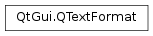

QTextFormat¶
Inherited by: QTextBlockFormat, QTextListFormat, QTextFrameFormat, QTextTableFormat, QTextCharFormat, QTextImageFormat, QTextTableCellFormat
Synopsis¶
Functions¶
- def
__eq__(rhs) - def
__ne__(rhs) - def
background() - def
boolProperty(propertyId) - def
brushProperty(propertyId) - def
clearBackground() - def
clearForeground() - def
clearProperty(propertyId) - def
colorProperty(propertyId) - def
doubleProperty(propertyId) - def
foreground() - def
hasProperty(propertyId) - def
intProperty(propertyId) - def
isBlockFormat() - def
isCharFormat() - def
isEmpty() - def
isFrameFormat() - def
isImageFormat() - def
isListFormat() - def
isTableCellFormat() - def
isTableFormat() - def
isValid() - def
layoutDirection() - def
lengthProperty(propertyId) - def
lengthVectorProperty(propertyId) - def
merge(other) - def
objectIndex() - def
objectType() - def
penProperty(propertyId) - def
properties() - def
property(propertyId) - def
propertyCount() - def
setBackground(brush) - def
setForeground(brush) - def
setLayoutDirection(direction) - def
setObjectIndex(object) - def
setObjectType(type) - def
setProperty(propertyId, lengths) - def
setProperty(propertyId, value) - def
stringProperty(propertyId) - def
swap(other) - def
toBlockFormat() - def
toCharFormat() - def
toFrameFormat() - def
toImageFormat() - def
toListFormat() - def
toTableCellFormat() - def
toTableFormat() - def
type()
Detailed Description¶
The
PySide2.QtGui.QTextFormatclass provides formatting information for aPySide2.QtGui.QTextDocument.A
PySide2.QtGui.QTextFormatis a generic class used for describing the format of parts of aPySide2.QtGui.QTextDocument. The derived classesPySide2.QtGui.QTextCharFormat,PySide2.QtGui.QTextBlockFormat,PySide2.QtGui.QTextListFormat, andPySide2.QtGui.QTextTableFormatare usually more useful, and describe the formatting that is applied to specific parts of the document.A format has a
FormatTypewhich specifies the kinds of text item it can format; e.g. a block of text, a list, a table, etc. A format also has various properties (some specific to particular format types), as described by the Property enum. Every property has a corresponding Property.The format type is given by
PySide2.QtGui.QTextFormat.type(), and the format can be tested withPySide2.QtGui.QTextFormat.isCharFormat(),PySide2.QtGui.QTextFormat.isBlockFormat(),PySide2.QtGui.QTextFormat.isListFormat(),PySide2.QtGui.QTextFormat.isTableFormat(),PySide2.QtGui.QTextFormat.isFrameFormat(), andPySide2.QtGui.QTextFormat.isImageFormat(). If the type is determined, it can be retrieved withPySide2.QtGui.QTextFormat.toCharFormat(),PySide2.QtGui.QTextFormat.toBlockFormat(),PySide2.QtGui.QTextFormat.toListFormat(),PySide2.QtGui.QTextFormat.toTableFormat(),PySide2.QtGui.QTextFormat.toFrameFormat(), andPySide2.QtGui.QTextFormat.toImageFormat().A format’s properties can be set with the
PySide2.QtGui.QTextFormat.setProperty()functions, and retrieved withPySide2.QtGui.QTextFormat.boolProperty(),PySide2.QtGui.QTextFormat.intProperty(),PySide2.QtGui.QTextFormat.doubleProperty(), andPySide2.QtGui.QTextFormat.stringProperty()as appropriate. All the property IDs used in the format can be retrieved with allPropertyIds(). One format can be merged into another usingPySide2.QtGui.QTextFormat.merge().A format’s object index can be set with
PySide2.QtGui.QTextFormat.setObjectIndex(), and retrieved withPySide2.QtGui.QTextFormat.objectIndex(). These methods can be used to associate the format with aPySide2.QtGui.QTextObject. It is used to represent lists, frames, and tables inside the document.See also
-
class
PySide2.QtGui.QTextFormat¶ -
class
PySide2.QtGui.QTextFormat(rhs) -
class
PySide2.QtGui.QTextFormat(type) Parameters: - type –
PySide2.QtCore.int - rhs –
PySide2.QtGui.QTextFormat
Creates a new text format with an
InvalidFormat.See also
QTextFormat.FormatTypeCreates a new text format with the same attributes as the
othertext format.Creates a new text format of the given
type.See also
QTextFormat.FormatType- type –
-
PySide2.QtGui.QTextFormat.FormatType¶ This enum describes the text item a
PySide2.QtGui.QTextFormatobject is formatting.Constant Description QTextFormat.InvalidFormat An invalid format as created by the default constructor QTextFormat.BlockFormat The object formats a text block QTextFormat.CharFormat The object formats a single character QTextFormat.ListFormat The object formats a list Unused Value, a table’s is . QTextFormat.FrameFormat The object formats a frame QTextFormat.UserFormat
-
PySide2.QtGui.QTextFormat.Property¶ This enum describes the different properties a format can have.
Constant Description QTextFormat.ObjectIndex The index of the formatted object. See PySide2.QtGui.QTextFormat.objectIndex().Paragraph and character properties
Constant Description QTextFormat.CssFloat How a frame is located relative to the surrounding text QTextFormat.LayoutDirection The layout direction of the text in the document ( Qt.LayoutDirection).QTextFormat.OutlinePen QTextFormat.ForegroundBrush QTextFormat.BackgroundBrush QTextFormat.BackgroundImageUrl Paragraph properties
Constant Description QTextFormat.BlockAlignment QTextFormat.BlockTopMargin QTextFormat.BlockBottomMargin QTextFormat.BlockLeftMargin QTextFormat.BlockRightMargin QTextFormat.TextIndent QTextFormat.TabPositions Specifies the tab positions. The tab positions are structs of QTextOption.Tabwhich are stored in aQList(internally, in aQList<PySide2.QtCore.QVariant>).QTextFormat.BlockIndent QTextFormat.LineHeight QTextFormat.LineHeightType QTextFormat.BlockNonBreakableLines QTextFormat.BlockTrailingHorizontalRulerWidth The width of a horizontal ruler element. Character properties
Constant Description QTextFormat.FontFamily QTextFormat.FontPointSize QTextFormat.FontPixelSize QTextFormat.FontSizeAdjustment Specifies the change in size given to the fontsize already set using or . QTextFormat.FontFixedPitch QTextFormat.FontWeight QTextFormat.FontItalic QTextFormat.FontUnderline This property has been deprecated. Use instead. QTextFormat.FontOverline QTextFormat.FontStrikeOut QTextFormat.FontCapitalization Specifies the capitalization type that is to be applied to the text. QTextFormat.FontLetterSpacingType Specifies the meaning of the property. The default is QFont.PercentageSpacing.QTextFormat.FontLetterSpacing Changes the default spacing between individual letters in the font. The value is specified as a percentage or absolute value, depending on . The default value is 100%. QTextFormat.FontWordSpacing Changes the default spacing between individual words. A positive value increases the word spacing by the corresponding pixels; a negative value decreases the spacing. QTextFormat.FontStretch Corresponds to the QFont.StretchpropertyQTextFormat.FontStyleHint Corresponds to the QFont.StyleHintpropertyQTextFormat.FontStyleStrategy Corresponds to the QFont.StyleStrategypropertyQTextFormat.FontKerning Specifies whether the font has kerning turned on. QTextFormat.FontHintingPreference Controls the use of hinting according to values of the QFont.HintingPreferenceenum.QTextFormat.TextUnderlineColor QTextFormat.TextVerticalAlignment QTextFormat.TextOutline QTextFormat.TextUnderlineStyle QTextFormat.TextToolTip Specifies the (optional) tool tip to be displayed for a fragment of text. QTextFormat.IsAnchor QTextFormat.AnchorHref QTextFormat.AnchorName QTextFormat.ObjectType List properties
Constant Description QTextFormat.ListStyle Specifies the style used for the items in a list, described by values of the QTextListFormat.Styleenum.QTextFormat.ListIndent Specifies the amount of indentation used for a list. QTextFormat.ListNumberPrefix Defines the text which is prepended to item numbers in numeric lists. QTextFormat.ListNumberSuffix Defines the text which is appended to item numbers in numeric lists. Table and frame properties
Constant Description QTextFormat.FrameBorder QTextFormat.FrameBorderBrush QTextFormat.FrameBorderStyle See the QTextFrameFormat.BorderStyleenum.QTextFormat.FrameBottomMargin QTextFormat.FrameHeight QTextFormat.FrameLeftMargin QTextFormat.FrameMargin QTextFormat.FramePadding QTextFormat.FrameRightMargin QTextFormat.FrameTopMargin QTextFormat.FrameWidth QTextFormat.TableCellSpacing QTextFormat.TableCellPadding QTextFormat.TableColumns QTextFormat.TableColumnWidthConstraints QTextFormat.TableHeaderRowCount Table cell properties
Constant Description QTextFormat.TableCellRowSpan QTextFormat.TableCellColumnSpan QTextFormat.TableCellLeftPadding QTextFormat.TableCellRightPadding QTextFormat.TableCellTopPadding QTextFormat.TableCellBottomPadding Image properties
Constant Description QTextFormat.ImageName QTextFormat.ImageWidth QTextFormat.ImageHeight Selection properties
Constant Description QTextFormat.FullWidthSelection When set on the characterFormat of a selection, the whole width of the text will be shown selected. Page break properties
Constant Description QTextFormat.PageBreakPolicy Specifies how pages are broken. See the QTextFormat.PageBreakFlagenum.QTextFormat.UserProperty
-
PySide2.QtGui.QTextFormat.ObjectTypes¶ This enum describes what kind of
PySide2.QtGui.QTextObjectthis format is associated with.Constant Description QTextFormat.NoObject QTextFormat.ImageObject QTextFormat.TableObject QTextFormat.TableCellObject QTextFormat.UserObject The first object that can be used for application-specific purposes.
-
PySide2.QtGui.QTextFormat.PageBreakFlag¶ This enum describes how page breaking is performed when printing. It maps to the corresponding css properties.
Constant Description QTextFormat.PageBreak_Auto The page break is determined automatically depending on the available space on the current page QTextFormat.PageBreak_AlwaysBefore The page is always broken before the paragraph/table QTextFormat.PageBreak_AlwaysAfter A new page is always started after the paragraph/table See also
QTextBlockFormat.pageBreakPolicy()QTextFrameFormat.pageBreakPolicy()PageBreakPolicy
-
PySide2.QtGui.QTextFormat.background()¶ Return type: PySide2.QtGui.QBrushReturns the brush used to paint the document’s background.
-
PySide2.QtGui.QTextFormat.boolProperty(propertyId)¶ Parameters: propertyId – PySide2.QtCore.intReturn type: PySide2.QtCore.boolReturns the value of the property specified by
propertyId. If the property isn’t of QTextFormat::Bool type, false is returned instead.See also
PySide2.QtGui.QTextFormat.setProperty()PySide2.QtGui.QTextFormat.intProperty()PySide2.QtGui.QTextFormat.doubleProperty()PySide2.QtGui.QTextFormat.stringProperty()PySide2.QtGui.QTextFormat.colorProperty()PySide2.QtGui.QTextFormat.lengthProperty()PySide2.QtGui.QTextFormat.lengthVectorProperty()QTextFormat.Property
-
PySide2.QtGui.QTextFormat.brushProperty(propertyId)¶ Parameters: propertyId – PySide2.QtCore.intReturn type: PySide2.QtGui.QBrushReturns the value of the property given by
propertyId; if the property isn’t ofQVariant.Brushtype,Qt.NoBrushis returned instead.See also
PySide2.QtGui.QTextFormat.setProperty()PySide2.QtGui.QTextFormat.boolProperty()PySide2.QtGui.QTextFormat.intProperty()PySide2.QtGui.QTextFormat.doubleProperty()PySide2.QtGui.QTextFormat.stringProperty()PySide2.QtGui.QTextFormat.lengthProperty()PySide2.QtGui.QTextFormat.lengthVectorProperty()QTextFormat.Property
-
PySide2.QtGui.QTextFormat.clearBackground()¶ Clears the brush used to paint the document’s background. The default brush will be used.
-
PySide2.QtGui.QTextFormat.clearForeground()¶ Clears the brush used to paint the document’s foreground. The default brush will be used.
-
PySide2.QtGui.QTextFormat.clearProperty(propertyId)¶ Parameters: propertyId – PySide2.QtCore.intClears the value of the property given by
propertyIdSee also
QTextFormat.Property
-
PySide2.QtGui.QTextFormat.colorProperty(propertyId)¶ Parameters: propertyId – PySide2.QtCore.intReturn type: PySide2.QtGui.QColorReturns the value of the property given by
propertyId; if the property isn’t ofQVariant.Colortype, an invalid color is returned instead.See also
PySide2.QtGui.QTextFormat.setProperty()PySide2.QtGui.QTextFormat.boolProperty()PySide2.QtGui.QTextFormat.intProperty()PySide2.QtGui.QTextFormat.doubleProperty()PySide2.QtGui.QTextFormat.stringProperty()PySide2.QtGui.QTextFormat.lengthProperty()PySide2.QtGui.QTextFormat.lengthVectorProperty()QTextFormat.Property
-
PySide2.QtGui.QTextFormat.doubleProperty(propertyId)¶ Parameters: propertyId – PySide2.QtCore.intReturn type: PySide2.QtCore.qrealReturns the value of the property specified by
propertyId. If the property isn’t ofQVariant.DoubleorQMetaType.Floattype, 0 is returned instead.See also
PySide2.QtGui.QTextFormat.setProperty()PySide2.QtGui.QTextFormat.boolProperty()PySide2.QtGui.QTextFormat.intProperty()PySide2.QtGui.QTextFormat.stringProperty()PySide2.QtGui.QTextFormat.colorProperty()PySide2.QtGui.QTextFormat.lengthProperty()PySide2.QtGui.QTextFormat.lengthVectorProperty()QTextFormat.Property
-
PySide2.QtGui.QTextFormat.foreground()¶ Return type: PySide2.QtGui.QBrushReturns the brush used to render foreground details, such as text, frame outlines, and table borders.
-
PySide2.QtGui.QTextFormat.hasProperty(propertyId)¶ Parameters: propertyId – PySide2.QtCore.intReturn type: PySide2.QtCore.boolReturns
trueif the text format has a property with the givenpropertyId; otherwise returnsfalse.See also
PySide2.QtGui.QTextFormat.properties()QTextFormat.Property
-
PySide2.QtGui.QTextFormat.intProperty(propertyId)¶ Parameters: propertyId – PySide2.QtCore.intReturn type: PySide2.QtCore.intReturns the value of the property specified by
propertyId. If the property is not of QTextFormat::Integer type, 0 is returned instead.See also
PySide2.QtGui.QTextFormat.setProperty()PySide2.QtGui.QTextFormat.boolProperty()PySide2.QtGui.QTextFormat.doubleProperty()PySide2.QtGui.QTextFormat.stringProperty()PySide2.QtGui.QTextFormat.colorProperty()PySide2.QtGui.QTextFormat.lengthProperty()PySide2.QtGui.QTextFormat.lengthVectorProperty()QTextFormat.Property
-
PySide2.QtGui.QTextFormat.isBlockFormat()¶ Return type: PySide2.QtCore.boolReturns
trueif this text format is aBlockFormat; otherwise returnsfalse.
-
PySide2.QtGui.QTextFormat.isCharFormat()¶ Return type: PySide2.QtCore.boolReturns
trueif this text format is aCharFormat; otherwise returnsfalse.
-
PySide2.QtGui.QTextFormat.isEmpty()¶ Return type: PySide2.QtCore.boolReturns true if the format does not store any properties; false otherwise.
-
PySide2.QtGui.QTextFormat.isFrameFormat()¶ Return type: PySide2.QtCore.boolReturns
trueif this text format is aFrameFormat; otherwise returnsfalse.
-
PySide2.QtGui.QTextFormat.isImageFormat()¶ Return type: PySide2.QtCore.boolReturns
trueif this text format is an image format; otherwise returnsfalse.
-
PySide2.QtGui.QTextFormat.isListFormat()¶ Return type: PySide2.QtCore.boolReturns
trueif this text format is aListFormat; otherwise returnsfalse.
-
PySide2.QtGui.QTextFormat.isTableCellFormat()¶ Return type: PySide2.QtCore.boolReturns
trueif this text format is aTableCellFormat; otherwise returnsfalse.
-
PySide2.QtGui.QTextFormat.isTableFormat()¶ Return type: PySide2.QtCore.boolReturns
trueif this text format is aTableFormat; otherwise returnsfalse.
-
PySide2.QtGui.QTextFormat.isValid()¶ Return type: PySide2.QtCore.boolReturns
trueif the format is valid (i.e. is notInvalidFormat); otherwise returnsfalse.
-
PySide2.QtGui.QTextFormat.layoutDirection()¶ Return type: PySide2.QtCore.Qt.LayoutDirectionReturns the document’s layout direction.
-
PySide2.QtGui.QTextFormat.lengthProperty(propertyId)¶ Parameters: propertyId – PySide2.QtCore.intReturn type: PySide2.QtGui.QTextLengthReturns the value of the property given by
propertyId.See also
PySide2.QtGui.QTextFormat.setProperty()PySide2.QtGui.QTextFormat.boolProperty()PySide2.QtGui.QTextFormat.intProperty()PySide2.QtGui.QTextFormat.doubleProperty()PySide2.QtGui.QTextFormat.stringProperty()PySide2.QtGui.QTextFormat.colorProperty()PySide2.QtGui.QTextFormat.lengthVectorProperty()QTextFormat.Property
-
PySide2.QtGui.QTextFormat.lengthVectorProperty(propertyId)¶ Parameters: propertyId – PySide2.QtCore.intReturn type: Returns the value of the property given by
propertyId. If the property isn’t of QTextFormat::LengthVector type, an empty length vector is returned instead.See also
PySide2.QtGui.QTextFormat.setProperty()PySide2.QtGui.QTextFormat.boolProperty()PySide2.QtGui.QTextFormat.intProperty()PySide2.QtGui.QTextFormat.doubleProperty()PySide2.QtGui.QTextFormat.stringProperty()PySide2.QtGui.QTextFormat.colorProperty()PySide2.QtGui.QTextFormat.lengthProperty()QTextFormat.Property
-
PySide2.QtGui.QTextFormat.merge(other)¶ Parameters: other – PySide2.QtGui.QTextFormatMerges the
otherformat with this format; where there are conflicts theotherformat takes precedence.
-
PySide2.QtGui.QTextFormat.objectIndex()¶ Return type: PySide2.QtCore.intReturns the index of the format object, or -1 if the format object is invalid.
-
PySide2.QtGui.QTextFormat.objectType()¶ Return type: PySide2.QtCore.intReturns the text format’s object type.
See also
QTextFormat.ObjectTypesPySide2.QtGui.QTextFormat.setObjectType()
-
PySide2.QtGui.QTextFormat.__ne__(rhs)¶ Parameters: rhs – PySide2.QtGui.QTextFormatReturn type: PySide2.QtCore.boolReturns
trueif this text format is different from theothertext format.
-
PySide2.QtGui.QTextFormat.__eq__(rhs)¶ Parameters: rhs – PySide2.QtGui.QTextFormatReturn type: PySide2.QtCore.boolReturns
trueif this text format is the same as theothertext format.
-
PySide2.QtGui.QTextFormat.penProperty(propertyId)¶ Parameters: propertyId – PySide2.QtCore.intReturn type: PySide2.QtGui.QPenReturns the value of the property given by
propertyId; if the property isn’t ofQVariant.Pentype,Qt.NoPenis returned instead.See also
PySide2.QtGui.QTextFormat.setProperty()PySide2.QtGui.QTextFormat.boolProperty()PySide2.QtGui.QTextFormat.intProperty()PySide2.QtGui.QTextFormat.doubleProperty()PySide2.QtGui.QTextFormat.stringProperty()PySide2.QtGui.QTextFormat.lengthProperty()PySide2.QtGui.QTextFormat.lengthVectorProperty()QTextFormat.Property
-
PySide2.QtGui.QTextFormat.properties()¶ Return type: Returns a map with all properties of this text format.
-
PySide2.QtGui.QTextFormat.property(propertyId)¶ Parameters: propertyId – PySide2.QtCore.intReturn type: object Returns the property specified by the given
propertyId.See also
PySide2.QtGui.QTextFormat.setProperty()QTextFormat.Property
-
PySide2.QtGui.QTextFormat.propertyCount()¶ Return type: PySide2.QtCore.intReturns the number of properties stored in the format.
-
PySide2.QtGui.QTextFormat.setBackground(brush)¶ Parameters: brush – PySide2.QtGui.QBrushSets the brush use to paint the document’s background to the
brushspecified.
-
PySide2.QtGui.QTextFormat.setForeground(brush)¶ Parameters: brush – PySide2.QtGui.QBrushSets the foreground brush to the specified
brush. The foreground brush is mostly used to render text.
-
PySide2.QtGui.QTextFormat.setLayoutDirection(direction)¶ Parameters: direction – PySide2.QtCore.Qt.LayoutDirectionSets the document’s layout direction to the specified
direction.
-
PySide2.QtGui.QTextFormat.setObjectIndex(object)¶ Parameters: object – PySide2.QtCore.intSets the format object’s object
index.
-
PySide2.QtGui.QTextFormat.setObjectType(type)¶ Parameters: type – PySide2.QtCore.intSets the text format’s object type to
type.See also
QTextFormat.ObjectTypesPySide2.QtGui.QTextFormat.objectType()
-
PySide2.QtGui.QTextFormat.setProperty(propertyId, value)¶ Parameters: - propertyId –
PySide2.QtCore.int - value – object
Sets the property specified by the
propertyIdto the givenvalue.See also
PySide2.QtGui.QTextFormat.property()QTextFormat.Property- propertyId –
-
PySide2.QtGui.QTextFormat.setProperty(propertyId, lengths) Parameters: - propertyId –
PySide2.QtCore.int - lengths –
Sets the value of the property given by
propertyIdtovalue.See also
PySide2.QtGui.QTextFormat.lengthVectorProperty()QTextFormat.Property- propertyId –
-
PySide2.QtGui.QTextFormat.stringProperty(propertyId)¶ Parameters: propertyId – PySide2.QtCore.intReturn type: unicode Returns the value of the property given by
propertyId; if the property isn’t ofQVariant.Stringtype, an empty string is returned instead.See also
PySide2.QtGui.QTextFormat.setProperty()PySide2.QtGui.QTextFormat.boolProperty()PySide2.QtGui.QTextFormat.intProperty()PySide2.QtGui.QTextFormat.doubleProperty()PySide2.QtGui.QTextFormat.colorProperty()PySide2.QtGui.QTextFormat.lengthProperty()PySide2.QtGui.QTextFormat.lengthVectorProperty()QTextFormat.Property
-
PySide2.QtGui.QTextFormat.swap(other)¶ Parameters: other – PySide2.QtGui.QTextFormatSwaps this text format with
other. This function is very fast and never fails.
-
PySide2.QtGui.QTextFormat.toBlockFormat()¶ Return type: PySide2.QtGui.QTextBlockFormatReturns this format as a block format.
-
PySide2.QtGui.QTextFormat.toCharFormat()¶ Return type: PySide2.QtGui.QTextCharFormatReturns this format as a character format.
-
PySide2.QtGui.QTextFormat.toFrameFormat()¶ Return type: PySide2.QtGui.QTextFrameFormatReturns this format as a frame format.
-
PySide2.QtGui.QTextFormat.toImageFormat()¶ Return type: PySide2.QtGui.QTextImageFormatReturns this format as an image format.
-
PySide2.QtGui.QTextFormat.toListFormat()¶ Return type: PySide2.QtGui.QTextListFormatReturns this format as a list format.
-
PySide2.QtGui.QTextFormat.toTableCellFormat()¶ Return type: PySide2.QtGui.QTextTableCellFormatReturns this format as a table cell format.
-
PySide2.QtGui.QTextFormat.toTableFormat()¶ Return type: PySide2.QtGui.QTextTableFormatReturns this format as a table format.
-
PySide2.QtGui.QTextFormat.type()¶ Return type: PySide2.QtCore.intReturns the type of this format.
See also
QTextFormat.FormatType
© 2018 The Qt Company Ltd. Documentation contributions included herein are the copyrights of their respective owners. The documentation provided herein is licensed under the terms of the GNU Free Documentation License version 1.3 as published by the Free Software Foundation. Qt and respective logos are trademarks of The Qt Company Ltd. in Finland and/or other countries worldwide. All other trademarks are property of their respective owners.